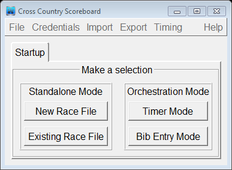

Cross Country Scoreboard Launch
Upon application launch, you are presented with a Startup selection with four choices:

- Standalone Mode
This mode is meant for single computer use during race configuration and set-up. Cross Country Scoreboard requires that a race file (extension *.xc) be chosen at launch time. After launch, the chosen file is automatically saved throughout the session. There is no need (or option) to save the file.
- Upon first startup, you will need to choose “New Race File”. For subsequent launches, you may choose “Existing Race File” to keep working on a previous race file.
- It is recommended that new race files be contained in is its own event folder (with the same name). This is because xcscoreboard creates accompanying html individual and team results files in the same folder as the race file.
- Timer Mode
This mode is meant for race day. Once this button is chosen, the application searches the WIFI network for its equivalent “Bib Entry Mode” companion before continuing. After discovering the corresponding Bib Entry partner, an existing race file must be chosen and the application continues to open and finally sync that race file data with its partner. In the Bibs/Timing page, typically, in this mode, only the “Time” and “ABib#” fields can receive entries (but can be overridden by clicking the column header).
- Bib Entry Mode
This mode is meant for race day. Once this button is chosen, the application searches the WIFI network for its equivalent “Timer Mode” companion before continuing. After discovering the corresponding Timer Mode partner, the launch finishes and receives all configuration, Racer data, and pre-existing Bib/Timing data (if any exists) from its partner and updates its data sets accordingly. Typically, when in this mode, when in the Bibs/Timing sheet, only the “Bib#” entries can be modified. However, if a timing system is connected to the Timer companion, then the ABib# column is the only set of entries that can be modified (allowing the Timing system to control actual Bib entry values).
The only data that can be meaningfully changed when in Bib Entry Mode is the Bib data on the Bibs/Timing page.